Published
Flood map for planning at time of release.
The release featured:
The start page was updated in this release, removing the data caveat
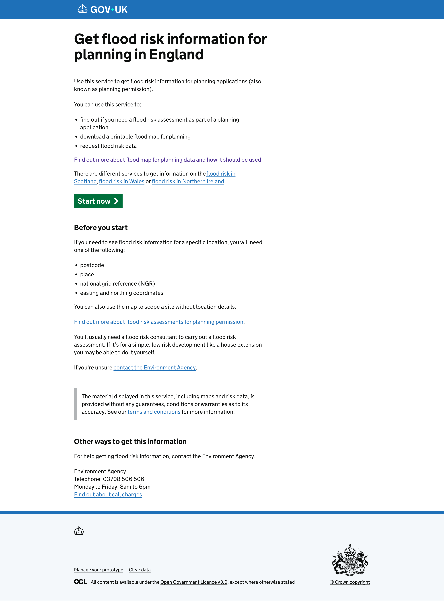
This page was not updated
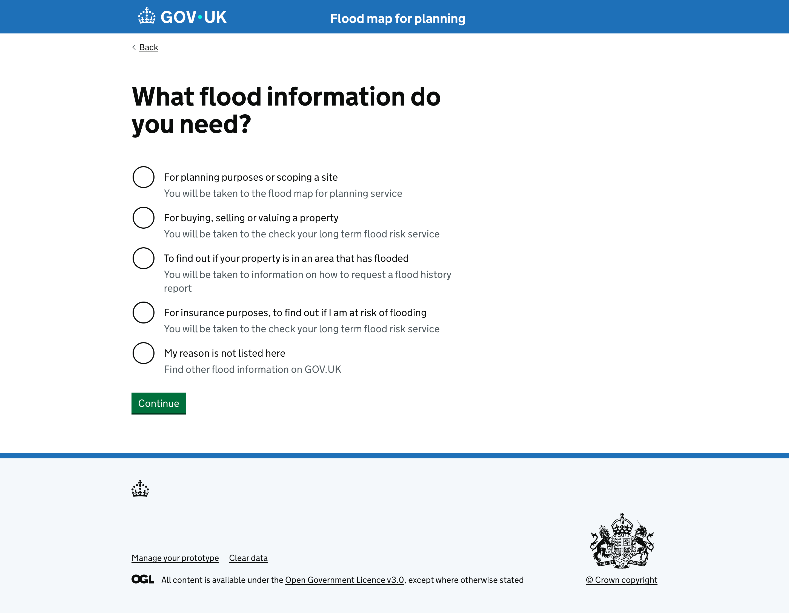
This page was not updated
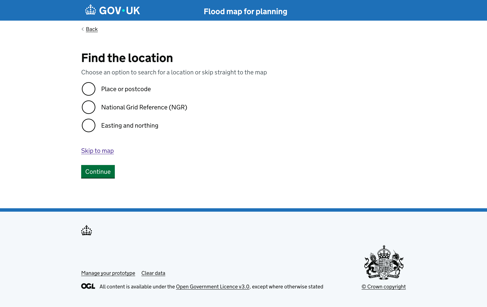
The map landing view now has an info panel with help information prompting the user to click the map to query the data. The panel is for first load only, with a cookie set to not display again, for the life of the cookie, once closed
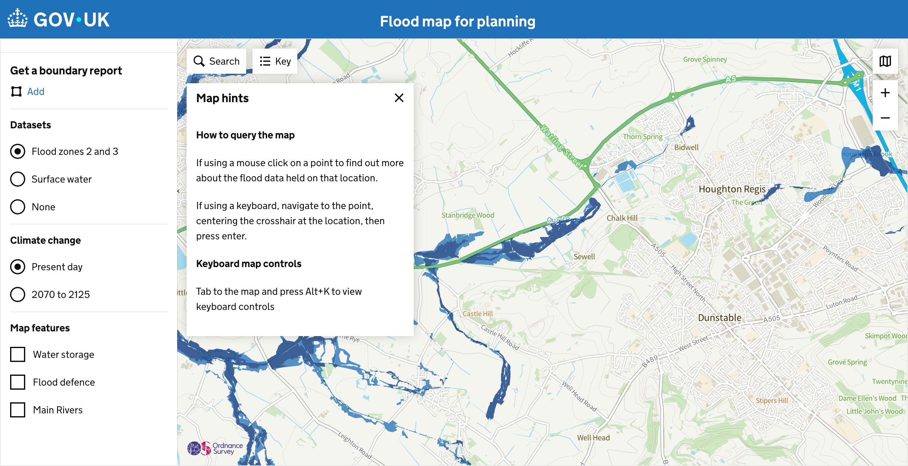
This page was not updated
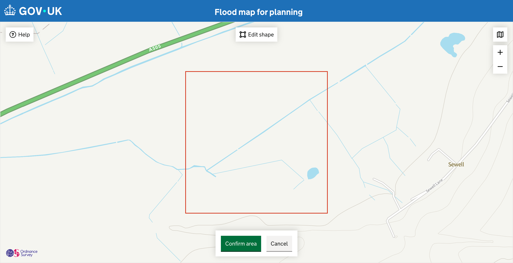
The information panel on the map has updated in line with the new flood zones with climate change, and no data available areas
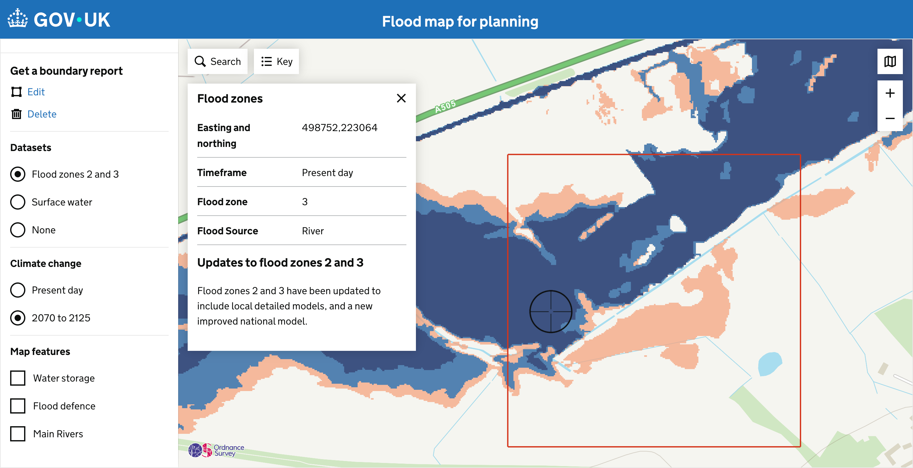
Areas of low confidence have been added to the map
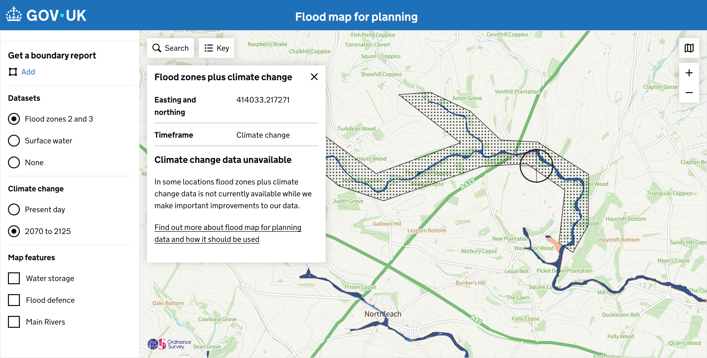
Black and white base map has been added to the map to better accommodate colour vision differences
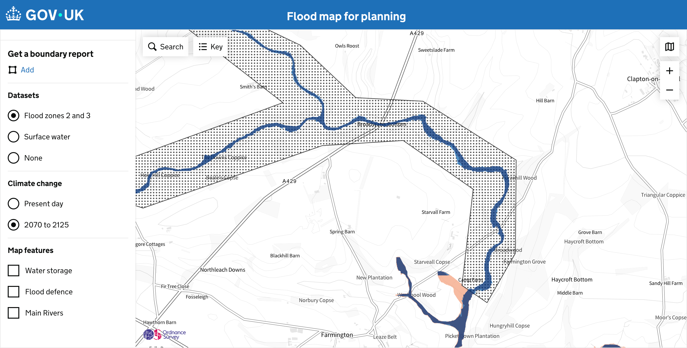
Key and legend updated to include new flood zones with climate change and data unavailable areas
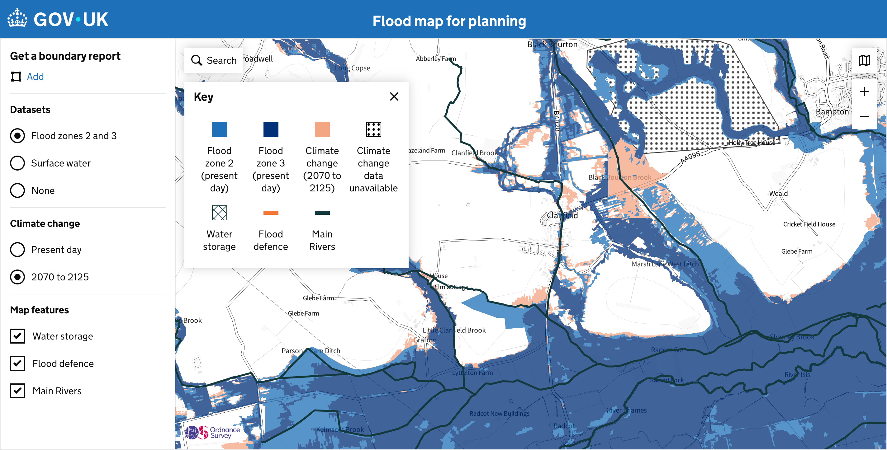
New page detailing how the flood zones with climate change data can be used
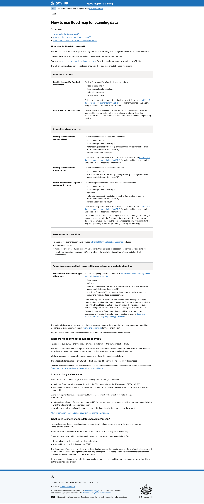
Results page updated to include flood zones with climate change, the removal of rivers and sea with climate change, along with other updates in relation to climate change allowances and defences
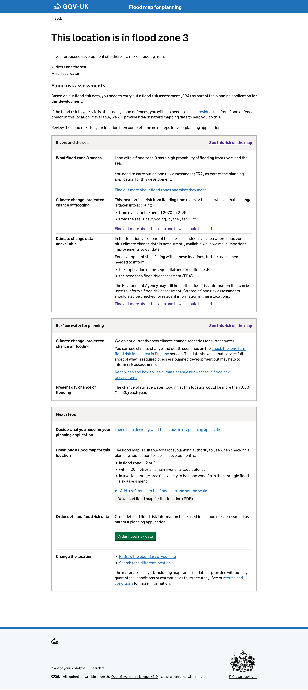
This page was not updated
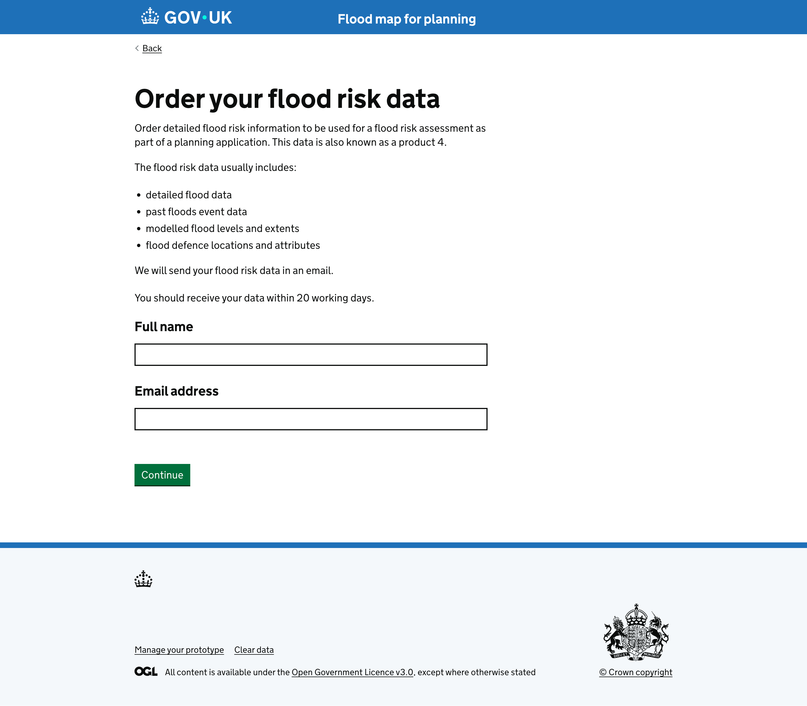
This page was not updated
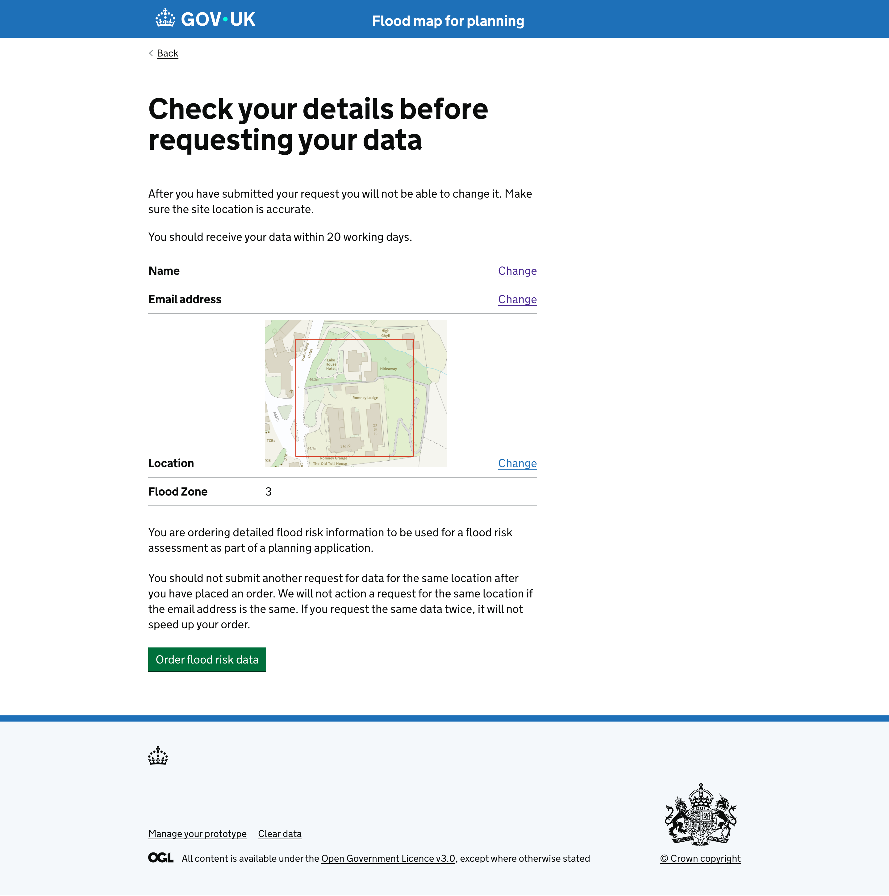
This page was not updated
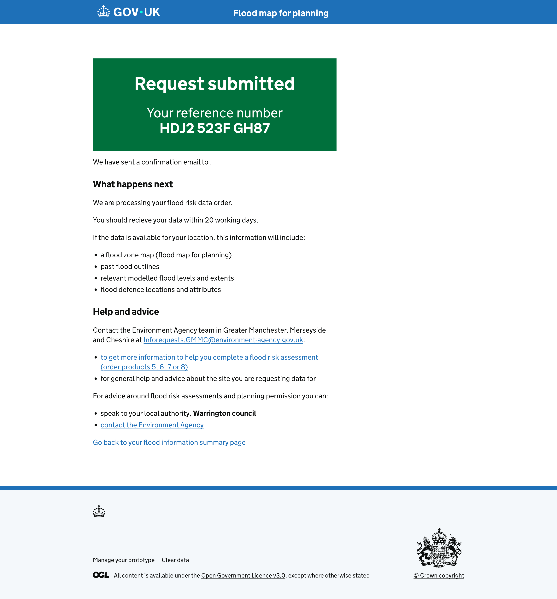
{% endblock %}